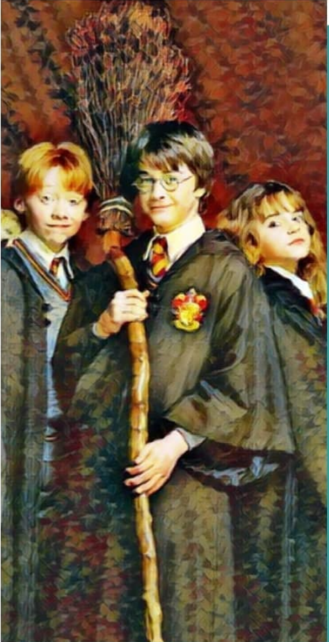

Happiness can be found, even in the darkest of times, if one only remembers to turn on the light .
Harry Potter

Hey, fellow Potterheads!
Of all the things Harry Potter has taught me, one thing that I have definitely learnt is how to survive the day when time is not in your favour. I know these are dark times and many of us don't exactly enjoy being at home because just like our hero, home is where the heart resides and right now we are far from our Hogwarts. We are left alone with our dementors to haunt us and by now we have been robbed of every positive feeling. For the non-magic folks, dementors are dark magical creatures which feed on negative emotions and drain peace, hope and happiness out of the air around them.
Most of the people are complaining about how they had planned their 2020, but it turned out to be completely different and unexpected. All of us have to sit at homes to save ourselves from what's out there. But how to save ourselves from what's inside our head. BUT, as Professor Lupin says, 'Eat chocolate, it helps'. The only way to fight those dementors is by casting a Patronus. A Patronus charm requires you to remember the happiest memory of your life and use it as a shield against the dementors. Because we gain experiences and make memories so that we can remember them during times like these. Instead of thinking about how 2020 could have been better, think about all the happy memories you have till 2019.
We know that Harry couldn't have made it till the end if he was alone in the war against the dark lord. He won because of all the people who were there for him. Similarly, we can't get through this on our own. We will need our Ron and Hermione to overcome the darkness within us.
Just like we get goosebumps every time Harry steps through the doors of Hogwarts, I'm sure we will get that same feeling when we will get back to our colleges and schools. And even if some of us don't, we can hope that things will get better because 'Happiness can be found even in the darkest times, only if one remembers to turn on the lights.'